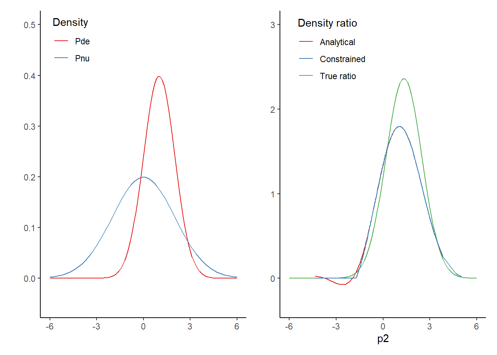

curve1 <- function(x) dnorm(x, 1, 1) # numerator
curve2 <- function(x) dnorm(x, 0, 2) # denominator
ratio <- function(x) (curve1(x) / curve2(x)) # ratioDensity ratio estimation by kernel mean matching
This document is heavily inspired by the book Density Ratio Estimation in Machine Learning (Sugiyama, Suzuki, and Kanamori 2012), and enriches their content with accompanying code for the example.
Density ratio estimation without going through density estimation can be achieved through moment matching. There are both finite-order moment matching techniques, as well as infinite-order moment matching techniques. The advantage of the latter is that it is consistent, in the sense that it converges to the true density ratio as the sample sizes grow to infinity.
Kernel mean matching is one approach to infinite-order moment matching that allows to efficiently match all the moments using kernel functions. Under the fixed design approach, the density ratio is estimated only at the observed sample points.
With kernel mean matching, a universal reproducing kernel \(K(\boldsymbol{x}, \boldsymbol{x}')\) is used as a non-linear transformation. The Gaussian kernel \[ K(\boldsymbol{x}, \boldsymbol{x}') = \exp \Bigg(- \frac{\lVert\boldsymbol{x} - \boldsymbol{x}'\rVert^2}{2\sigma^2}\Bigg) \] is an example of a universal reproducing kernel. It has been shown that the solution of the following optimization problem agrees with the true density-ratio function (Huang et al. 2006; Gretton et al. 2009): \[ \min_{r\in\mathcal{R}} \Bigg\lVert \int K(\boldsymbol{x}, \cdot) p^*_{\text{nu}}(\boldsymbol{x}) \text{d}\boldsymbol{x} - \int K(\boldsymbol{x}, \cdot) r(\boldsymbol{x})p^*_{\text{de}}(\boldsymbol{x}) \text{d}\boldsymbol{x} \Bigg\rVert^2_\mathcal{R}, \] where \(\mathcal{R}\) denotes a universal reproducing kernel Hilbert space and \(\lVert\cdot \rVert_\mathcal{R}\) denotes its norm.
Analytical solution to kernel mean matching
An empirical version of the problem is expressed as \[ \min_{\boldsymbol{r} \in \mathbb{R}^{n_\text{de}}} \Bigg[ \frac{1}{n^2_\text{de}} \boldsymbol{r}^T\boldsymbol{K}_{\text{de,de}}\boldsymbol{r} - \frac{2}{n_\text{de}n_{\text{nu}}} \boldsymbol{r}^T \boldsymbol{K}_{\text{de,nu}} \boldsymbol{1}_{n_{\text{nu}}}, \Bigg] \] where \(\boldsymbol{K}_{\text{de,de}}\) and \(\boldsymbol{K}_{\text{de,nu}}\) denote the kernel Gram matrices defined by \[ [\boldsymbol{K}_{\text{de,de}}]_{j,j'} = K(\boldsymbol{x}_j^\text{de}, \boldsymbol{x}_{j'}^\text{de}) ~~~~ \text{and} ~~~~ [\boldsymbol{K}_{\text{de,nu}}]_{j,i} = K(\boldsymbol{x}_j^\text{de}, \boldsymbol{x}_{i}^\text{nu}), \] respectively. Taking the derivative with respect to \(\boldsymbol{r}\) yields \[ \hat{\boldsymbol{r}}_\text{de} = \frac{n_\text{de}}{n_{\text{nu}}} \boldsymbol{K}_{\text{de,de}}^{-1} \boldsymbol{K}_{\text{de,de}} \boldsymbol{1}_{n_{\text{nu}}}. \]
Let’s work this out for an example. Consider the true densities \(p^*_1\) and \(p^* _2\), which are defined as \[ p^*_1(x) = \mathcal{N}(x; 1, 1^2) ~~~~ \text{and} ~~~~ p^*_2(x) = \mathcal{N}(x; 0, 2^2), \] where \(\mathcal{N}(x; \mu, \sigma^2)\) denotes the Gaussian density with mean \(\mu\) and variance \(\sigma^2\).
Specify empirical distribution
Sample data
In this example, we consider two samples of \(n_1 = n_2 = 200\) observations each.
# Generate samples from both distributions
p1 <- rnorm(200, 1, 1)
p2 <- rnorm(200, 0, 2)Load required packages
library(ggplot2)Warning: package 'ggplot2' was built under R version 4.2.2library(patchwork)
library(quadprog)Specify auxiliary functions
In our example, we use kernel mean matching with the Gaussian kernel \[ K(x,x') = \exp \Bigg(-\frac{(x-x')^2}{2\sigma^2}\Bigg), \] where the Gaussian kernel width \(\sigma\) is set to the median distance between all samples, which is a popular heuristic in kernel methods. Note that to make the kernel Gram matrix of the denominator \(\boldsymbol{K}_{\text{de,de}}\) positive definite, we need to add a ridge penalty to the diagonal. We choose the ridge penalty to equal \(4\).
# Gaussian kernel function for the data
kernelfunc <- function(x, y, sigma = NULL) {
if (is.null(sigma)) {
sigma <- abs(x - y) |> median()
}
exp(-(x - y)^2 / (2 * sigma^2))
}
# Make kernel Gram matrix, which is a pairwise similarity measure, K(x,x') = k_{i,i'} (x_i, x_i')
gram <- function(x, y, sigma = NULL) {
# create pairwise grid
vgram <- expand.grid(x, y)
# Create kernel gram matrix (pairwise similarity with x in rows, y in columns)
kernelfunc(vgram[,1], vgram[,2], sigma = sigma) |>
matrix(length(x))
}
rhat <- function(x, y, sigma = NULL, ridge = 1e-06) {
# estimate density ratio
# Sample size of x
nd <- length(x)
# Sample size of y
nn <- length(y)
# Create gram matrix of x with itself
Kdd <- gram(x, x, sigma = sigma)
# Create gram matrix of x and y
Kdn <- gram(x, y, sigma = sigma)
# Create vector of ones
one <- rep(1, nn)
# Add ridge penalty
Kdd <- Kdd + ridge * diag(nrow(Kdd))
# Compute analytic solution
(nd / nn) * solve(Kdd) %*% Kdn %*% one
}
# Specify common sigma based on discrepancy between x and y.
sigma <- expand.grid(X1 = p1, X2 = p2) |>
{\(x) abs(x$X1 - x$X2)}() |>
median()
analytical <- rhat(p2, p1, sigma = sigma, ridge = 4)Constrained kernel mean matching
When one wants to include non-negativity constraints, normalization constraints and/or an upper bound, one can obtain a solution by solving a convex linearly constrained quadratic programming problem. In this case, we have the same optimization problem, subject to a set of constraints. That is, we solve \[ \min_{r\in\mathcal{R}} \Bigg\lVert \int K(\boldsymbol{x}, \cdot) p^*_{\text{nu}}(\boldsymbol{x}) \text{d}\boldsymbol{x} - \int K(\boldsymbol{x}, \cdot) r(\boldsymbol{x})p^*_{\text{de}}(\boldsymbol{x}) \text{d}\boldsymbol{x} \Bigg\rVert^2_\mathcal{R}, \] subject to \[ \boldsymbol{0} \leq \hat{\boldsymbol{r}}_\text{de} \leq B \boldsymbol{1}, \] and \[ \frac{1}{n_{\text{de}}} [\boldsymbol{1}_{n_{\text{de}}}; -\boldsymbol{1}_{n_{\text{de}}}]^T \hat{\boldsymbol{r}}_{\text{de}} \leq [(\epsilon + 1), (\epsilon - 1)]^T. \] In other words, we use the constraints \(\hat{r}_{\text{de}, i} \in [0, B]\), \(i = 1, 2, \dots, n_{\text{de}}\), and \(|\frac{1}{n_{\text{de}}} \sum^{n_{\text{de}}}_{i=1} \hat{r}_{\text{de}, i} -1| \leq \epsilon\). The first constraints limit \(\hat{r}_{\text{de}, i}\) to stay between \(0\) and \(B\), which reflects the scope of the discrepancy between \(p_1\) and \(p_2\). The second constraint imposes a normalization over \(\hat{r}_{\text{de}, i}\) such that \(\hat{r}_{\text{de}, i}(x) p_2(x) = p_1(x)\) is a density. The small value \(\epsilon\) can be regarded as the normalization precision. The original kernel mean matching paper suggests setting \(B=1000\) and \(\epsilon = \frac{\sqrt{n_{\text{de}}} - 1}{\sqrt{n_{\text{de}}}}\) (Miao, Farahat, and Kamel 2015).
For the quadratic programming problem solving software solve.QP from the quadprog package in R (Turlach, Weingessel, and Moler 2019), we transform our problem into something of the form \[
\min(-d^Tb + 1/2 b^T D b),
\] subject to constraints \[
A^Tb \geq b_0.
\] We can transform our problem into the above specification by setting \(D = \boldsymbol{K}_\text{de,de}\), \(b = \boldsymbol{K}_\text{de,nu}\boldsymbol{1}_{n_\text{nu}}\), \(A = [-\boldsymbol{1}_{n_{\text{de}}}, \boldsymbol{1}_{n_{\text{de}}}, \boldsymbol{I}_{n_{\text{de}}}, -\boldsymbol{I}_{n_{\text{de}}}]\), where \(\boldsymbol{1}_{n_{\text{de}}}\) denotes a column vector of length \(n_\text{de}\) and \(\boldsymbol{I}_{n_{\text{de}}}\) denotes the \(n_{\text{de}}\)-dimensional identity matrix, and choosing \(b_0 = [n_\text{de}(\epsilon + 1), n_{\text{de}} (\epsilon - 1), \boldsymbol{0}_{n_{\text{de}}}^T, -\boldsymbol{1000}_{n_{\text{de}}}^T]^T\), where the first two terms are scalars, and the latter two terms are column vectors of length \(n_{\text{de}}\), such that \(b_0\) is a single column vector of length \(2 * (n_{\text{de}} + 1)\).
Optimization problem
# Kernel gram matrix of distance of denominator with itself
Kdd <- gram(p2, p2, sigma = sigma) + diag(length(p2)) * 4
# Kernel gram matrix of distance of denominator with the numerator
Kdn <- gram(p2, p1)
# Constraints matrix that will be multiplied with the ratio
A <- cbind(-rep(1, ncol(Kdd)), # the ratio in combination with the denominator
rep(1, ncol(Kdd)), # density should approximately integrate to 1
diag(ncol(Kdd)), # the density ratio should be positive, and is
-diag(ncol(Kdd))) # constrained to be smaller than 1000 everywhere
# Bounds with respect to the integration
eps <- (sqrt(ncol(Kdd)) - 1) / (sqrt(ncol(Kdd)))
# Second part of constraints, t(A) %*% r >= b
b <- c(-ncol(Kdd) * (eps + 1), ncol(Kdd) * (eps - 1), rep(0, ncol(Kdd)), -rep(1000, ncol(Kdd)))
# Solve the optimization problem
out <- solve.QP(Dmat = Kdd, dvec = Kdn %*% rep(1, ncol(Kdn)), Amat = A, bvec = b)Results
Visualize results
ggplot() +
stat_function(fun = dnorm, args = list(mean = 1, sd = 1), aes(col = "Pde")) +
stat_function(fun = dnorm, args = list(mean = 0, sd = 2), aes(col = "Pnu")) +
theme_classic() +
xlim(-6, 6) +
ylim(-0.05, 0.5) +
ylab("") +
scale_color_brewer("Density", palette = "Set1") +
theme(legend.position = c(.15, .9)) +
ggplot() +
stat_function(fun = ratio, aes(col = "True ratio")) +
geom_line(aes(x = p2, y = analytical, col = "Analytical")) +
geom_line(aes(x = p2, y = out$solution, col = "Constrained")) +
theme_classic() +
xlim(-6, 6) +
ylim(-0.3, 3) +
ylab("") +
scale_color_brewer("Density ratio", palette = "Set1") +
theme(legend.position = c(.25, .87))
When inspecting the results, we see that both solutions are reasonably accurate in the regions were there is relatively a lot of data for both densities. When there is relatively little data, there are some bumps in the density ratio estimates. Yet, overall, both solutions come quite close to the true density ratio.
References
Gretton, Arthur, Alex Smola, Jiayuan Huang, Marcel Schmittfull, Karsten Borgwardt, and Bernhard Schölkopf. 2009. “Covariate Shift by Kernel Mean Matching.” Dataset Shift in Machine Learning 3 (4): 5.
Huang, Jiayuan, Arthur Gretton, Karsten Borgwardt, Bernhard Schölkopf, and Alex Smola. 2006. “Correcting Sample Selection Bias by Unlabeled Data.” Advances in Neural Information Processing Systems 19.
Miao, Yun-Qian, Ahmed K Farahat, and Mohamed S Kamel. 2015. “Ensemble Kernel Mean Matching.” In 2015 IEEE International Conference on Data Mining, 330–38. IEEE.
Sugiyama, Masashi, Taiji Suzuki, and Takafumi Kanamori. 2012. Density Ratio Estimation in Machine Learning. Cambridge University Press.
Turlach, Berwin A., Andreas Weingessel, and Cleve Moler. 2019. Quadprog: Functions to Solve Quadratic Programming Problems. https://CRAN.R-project.org/package=quadprog.